In the past, darkrooms would often be used to develop film. However thanks to advances in technology this isn’t as necessary as long as a few steps are followed. Please note however, this discussion will mainly focus on developing black and white film but the process for color film will be briefly touched upon.
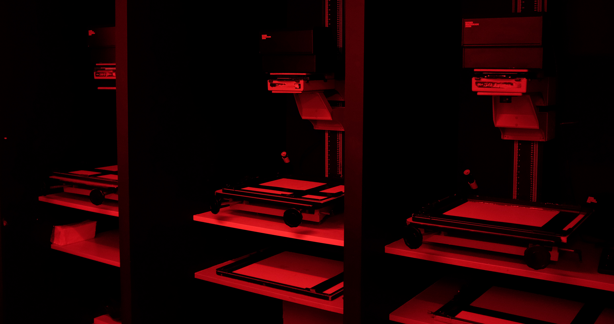
First, a developer solution (converting the film’s raw negative images into visible ones) must be chosen (Harrison, 2020 and Veterian Key). For color photography this is often a C41 and E6 developer but for black and white there's many other options. For example, there's fine grain quality solvent, sharper non solvent, liquid and powder developer options present today (Harrison, 2020). Solvents can often cover more exposure ranges (and increase photograph sharpness by being diluted) while non solvent developers increase film grain and sharpness. The bottom shows a fixer (left bottle) and developer (right bottle).
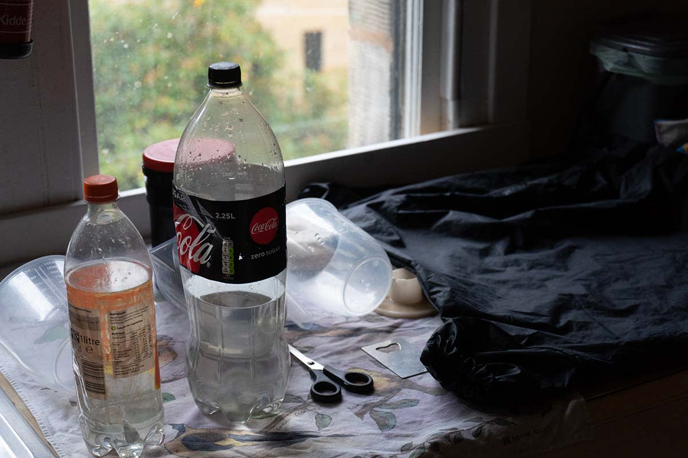
After taking the proper safety precautions of wearing rubber gloves and being in a high ventilated area, various mixtures are done. For powder developers, a container like a beaker must be filled to a set amount (based on prior research pertaining to that specific developer), before 2 A and B developers are mixed and filled with a certain amount of water depending on that specific solution brand's recommended ratio (Harrison, 2020). Using powder solutions will also require someone to wait for their solution to reach room temperature before proceeding in this process. The liquid developer also has to be diluted based on specified instructions from the developing tank (used to hold the solution, speaking of which).
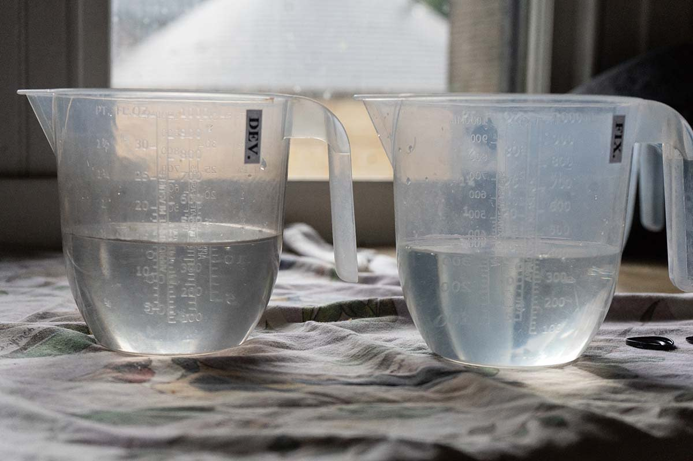
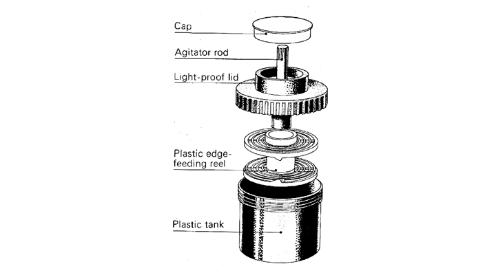
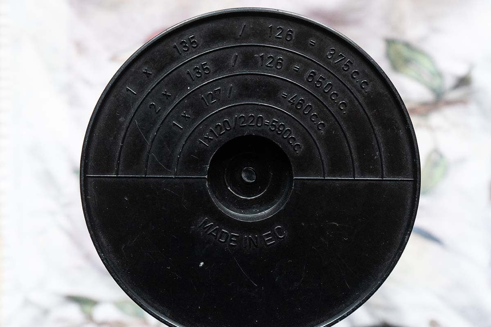
In complete darkness inside a changing bag, the film roll then gets taken out from its canister spool and fed onto a reel (Harrison, 2020). The film roll is then loaded inside the development tank and pre-washed through an agitator hole in the tank filled to the max with cold water for around 2-5 minutes (Harrison, 2020). This is to prevent any air bubbles from forming on the film and disrupting the final photo quality. The changing bag can only be opened once the tank is closed with the film inside it (Harrison, 2020).
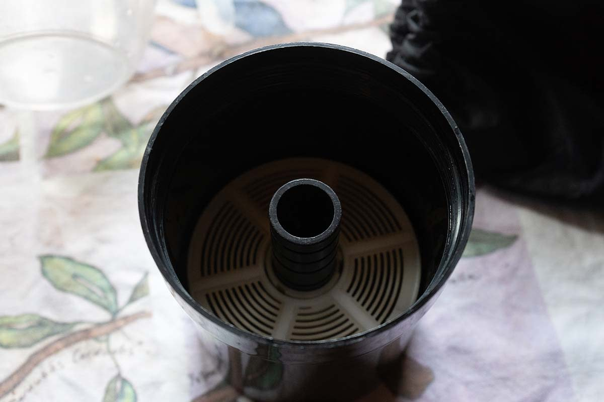
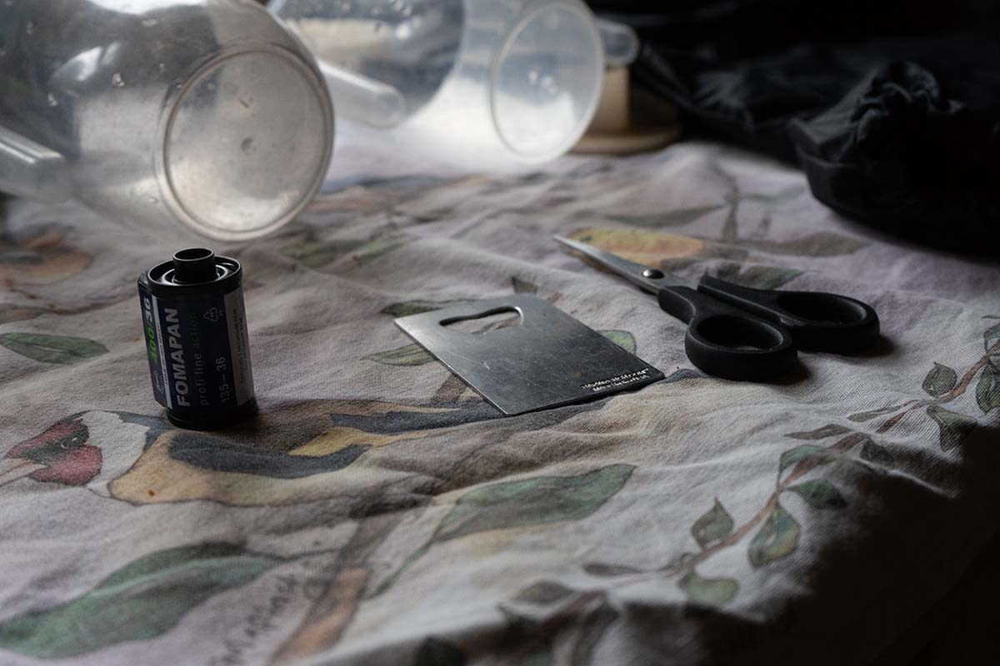
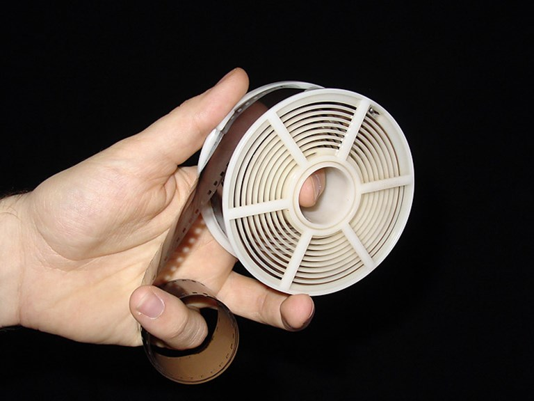
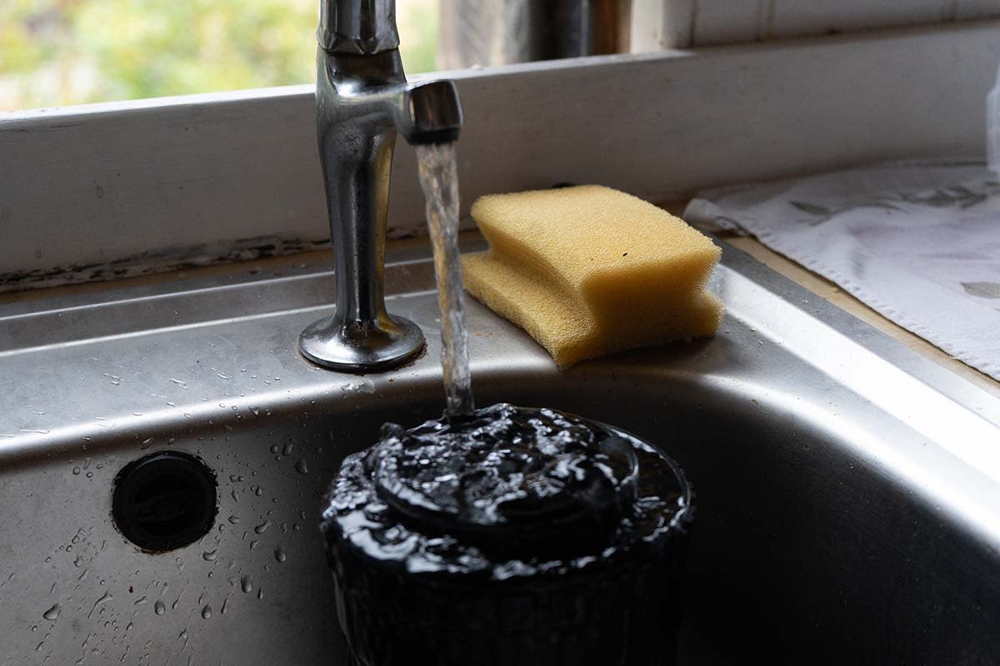
After soaking, the water is then poured out of the tank and a thermometer is used to check the developer temperature (which should be at 20 degrees celsius/ 68 degrees fahrenheit) (Harrison, 2020). After checking the film and developing timings, the developer is then poured into the same tank hole.
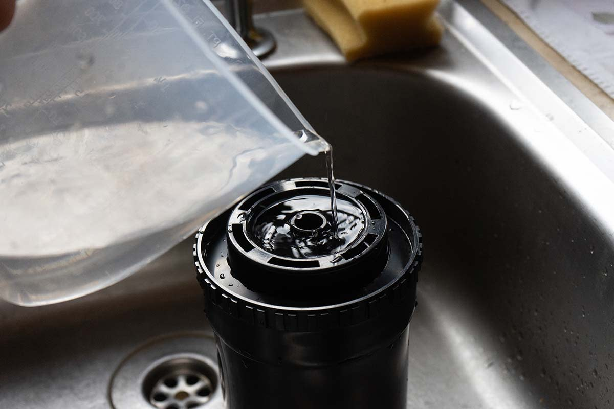
In the next step, development of the film will cease either through a stop bath solution (poured into the tank and emptied back into its container after some time) or by running lukewarm water through the tank (Harrison, 2020).
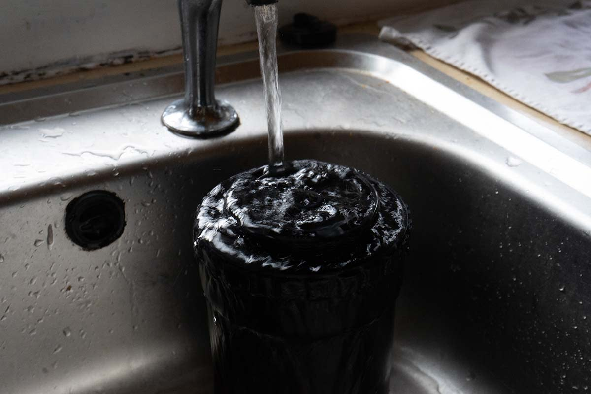
A fixer solution is then poured into the tank to remove certain compound crystals on the film inside the tank (Harrison, 2020). This is often done at a temperature of 10-30 degrees Celsius (50 - 86 degrees Fahrenheit). After its specific amount of time the fixer is then poured out of the tank and back into its container (Harrison, 2020).
The tank is then rinsed under water for a few minutes (Harrison, 2020).
After that, the tank lid gets opened and the film itself gets washed (Harrison, 2020).
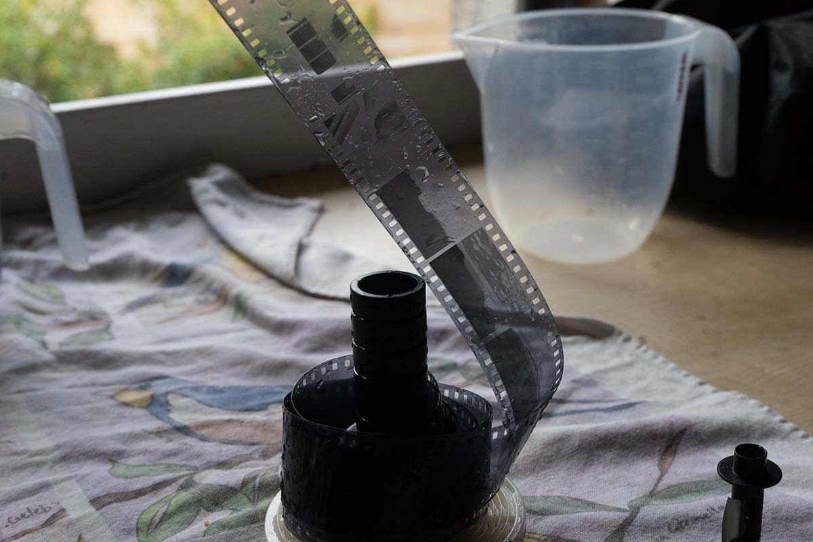
The film can then be removed and left to dry (Harrison, 2020).